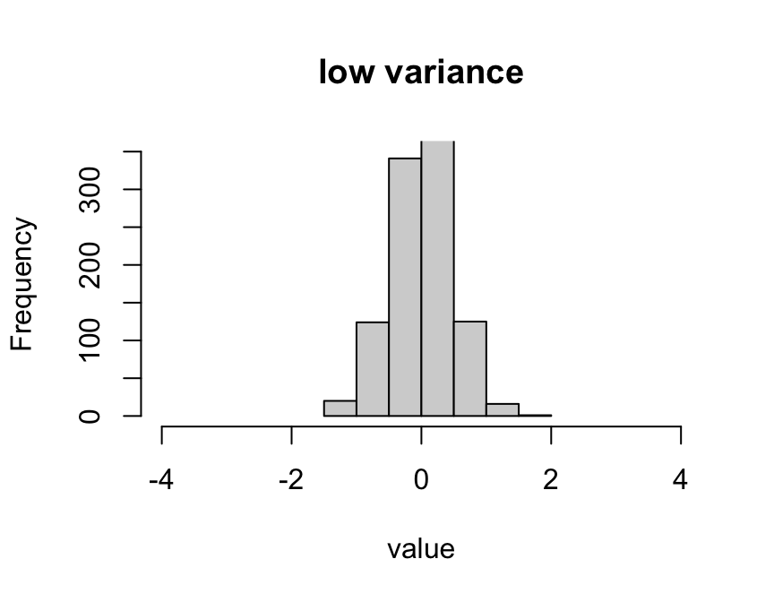
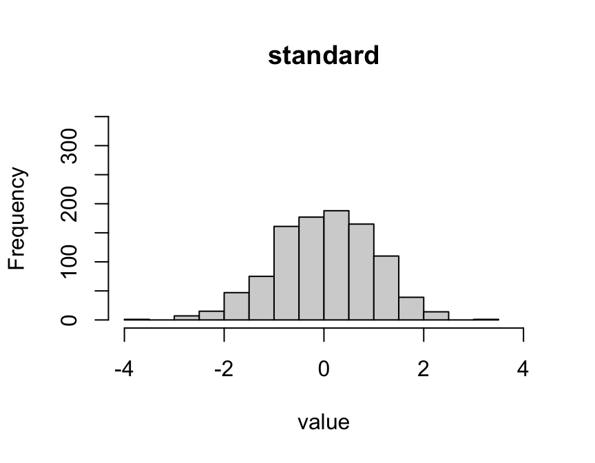
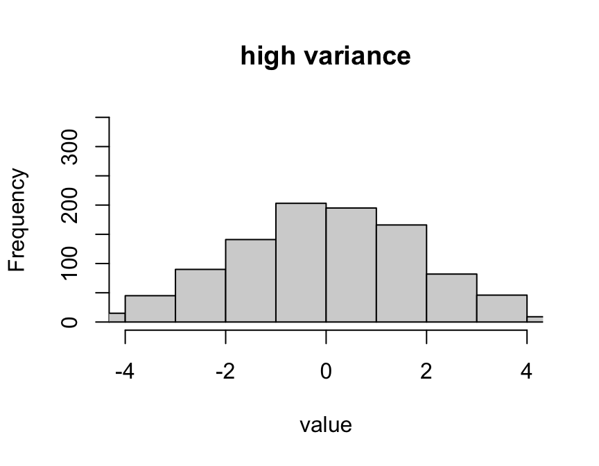
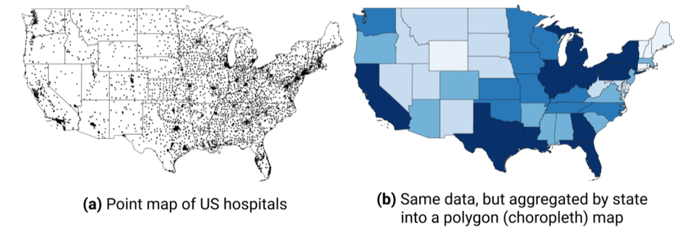
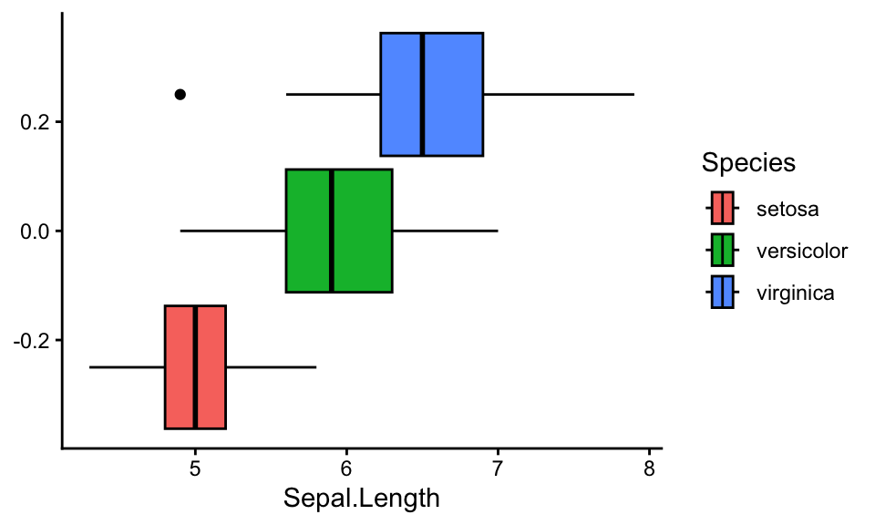
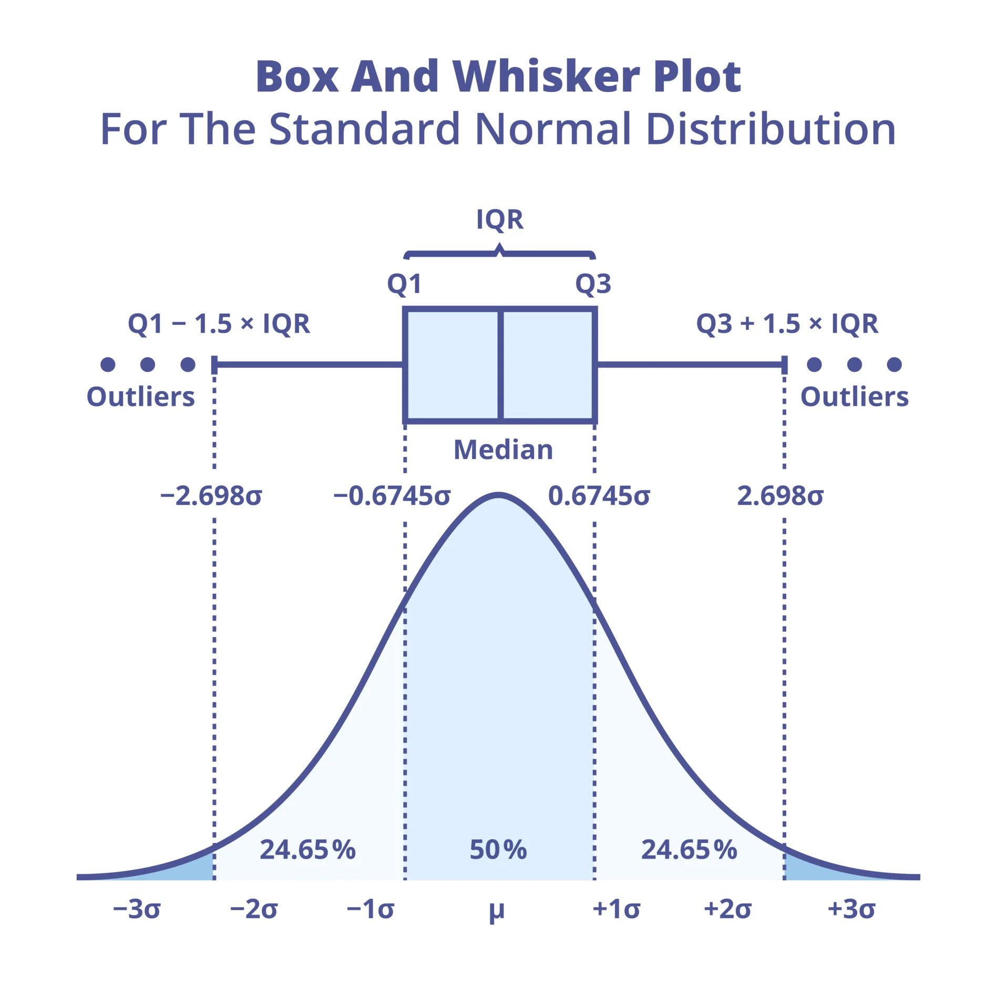
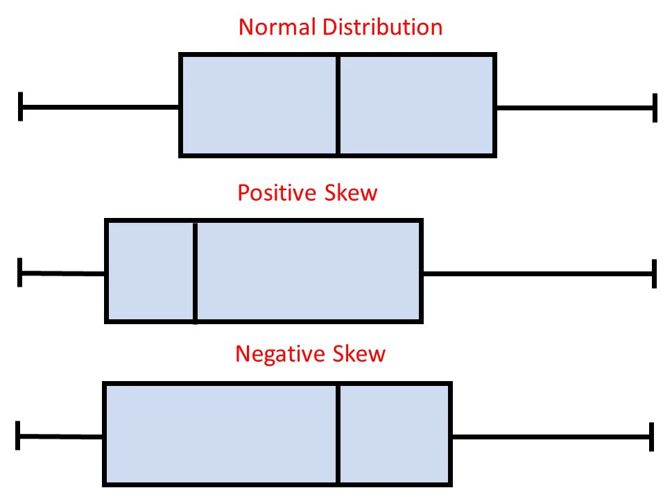

install.packages("psych")PSYC 2020-A01 / PSYC 6022-A01 | Lab 3
Packages are add-ons that give R extra functions (e.g., psych, ggplot2). Using one is a two-step process:
install.packages("name")Downloads the package onto your computer
Installing is like buying a book; library() is taking it off the shelf to read it. Installing alone is not enough: without library(), you’ll see could not find function "describeBy".
Describe the “spread” or “dispersion” of the data



var(x) function
x = vector
sd(x) function
x = vector
IQR(x) function
x = vector
Quantiles: quantile() function
To access some subset of an object (vector, list, dataframe, etc.)
We already know one! The $ operator indexes by selecting a column
To access some subset of an object (vector, list, dataframe, etc.)
Can also use brackets []
Can select more than one position at a time
Need to account for multiple dimensions
Matrix: [row, column]
Var1 Var2 Var3
[1,] 0 1 2
[2,] 1 2 3
[3,] 2 3 4Dataframe: [column] or [row, column]

Aggregation involves summarizing or grouping data based on certain variables.
Commonly used to calculate summary statistics like mean, variance, or sum for each group.
aggregate(y ~ group, FUN)
y = vector we want statistics for
group = vector with grouping data
FUN = function to apply
table() and describeBy()table(var1, var2)
var1 = rows, var2 = columns (both categorical)
describeBy(x, group)
psych package: install.packages("psych")
x = numeric vector, group = grouping vector
mat = TRUE for one compact table
Back to the iris dataset, distribution of Sepal Length by species

Means that the whiskers contain ~99% of the data, rest are outliers
For more explanation of the anatomy of a boxplot, feel free to check this post out from Statistics by Jim
One more resource for boxplot anatomy


boxplot(x) function
Its arguments are:
x = vector (variable) you want to plot
main = title
xlab = label for x-axis
ylab = label for y-axis
border = color for bar borders
col = color for bars
horizontal = T/F to switch
To group them, you can change the x to a “formula”
outcome_var ~ group_var
Just like we saw with aggregate()
When you write read.csv("student_data.csv"), R reads it as: “look for student_data.csv inside the current working directory”
Rule for beginners
Your R Markdown file and all required data files should be placed in the same assignment folder before you begin working.
Lab_03/
├── Lab_03.Rmd
└── student_data.csvThen loading the data only needs the file name:
Check before you load data
If the setup is correct you should see something like:
[1] "/Users/yourname/Documents/Lab_03"
[1] "Lab_03.Rmd" "student_data.csv".Rmd, the working directory is the folder the .Rmd is saved in
Files downloaded to different places
Downloads/
└── Lab_03.Rmd
Desktop/
└── student_data.csvThe working directory is Downloads, so this fails:
Error in file(file, "rt") : cannot open the connection
In addition: Warning message:
cannot open file 'student_data.csv': No such file or directoryWhat the error means
R looked in the working directory but did not find a file with that exact name.
The fix
Lab_03/)
.Rmd from that folder
getwd() and list.files() to confirm
Fix the folder, not the code: don’t keep rewriting the path in read.csv().
Also check the exact file name: Student_Data.csv ≠ student_data.csv
Create a folder for the assignment for your convenience
Have the rmd. and the dataset for the assignment on the same folder
Submit both the rmd. and the knitted file